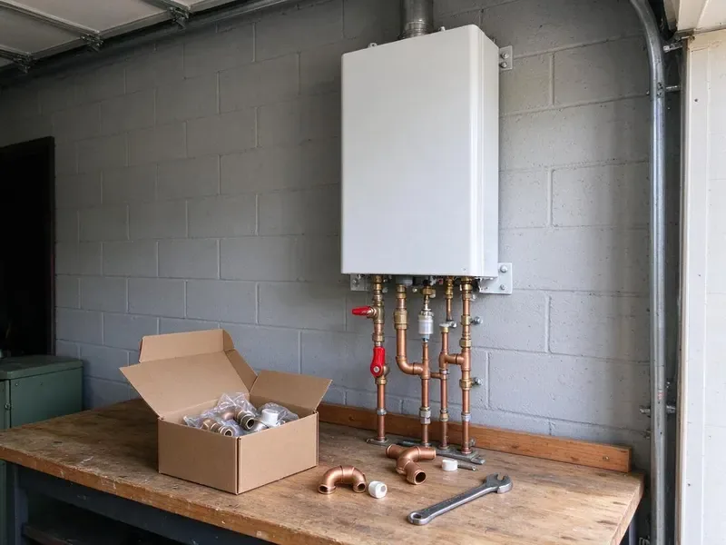

Water Softener Installation in Hanford, CA
Tired of crusty faucets and scaled water heaters in Hanford, CA? We install softeners, conditioners and filtration systems sized to your home.
- Free Water Hardness Testing
- Loop Installs Available
- Fast Softener Installation
- Quality Brands

Shield your pipes and appliances with soft water in Hanford, CA.
Call FBL Plumbing today for a free consultation and discover the benefits of a whole-home water softener system.
Your Go-To for Water Softener Installation in Hanford, CA
FBL Plumbing understands the local water challenges faced by homeowners in Hanford, CA. Our expert plumbers provide tailored water softener installation solutions, ensuring your home receives clean, soft water for years to come.
Our expertise includes:
- Salt-free conditioners and whole-home carbon filtration systems
- Complete water hardness testing and analysis
- Precise plumbing for seamless system integration

Additional Plumbing Installation Services in Hanford, CA
We install water heaters, pumps, lines, and fixtures across Hanford, CA with precision workmanship that meets every local code.


Customers
Why Choose FBL Plumbing for Water Softener Installation in Hanford, CA?
Choosing the right water softener and having it installed correctly is essential for its performance and longevity. Our experienced plumbers ensure a professional installation every time.
- Clean Installation, We use quality fittings and include a bypass valve for simple service.
- Accurate Testing, We test hardness and chlorine levels before recommending a system.
- Local Expertise, We understand the water hardness issues found in Hanford and throughout Northern California.
Citywide Coverage
From older homes without loops to new builds, we serve every part of Hanford. We can add a loop where none exists so you can enjoy soft water throughout the house.
Experienced Team
Our team of plumbers has extensive experience with many water softener models and installation scenarios common in Northern California homes. They are skilled at handling everything from basic residential setups to more complex whole-house systems.
Safety-First Approach
Before, during and after installation, our team follows safety protocols to protect your home and our technicians. You can trust FBL Plumbing for a secure and professionally completed water softener installation that meets all regulatory requirements.
Trusted Certified Hanford Plumbing Services Professionals
At FBL Plumbing, we take pride in providing certified plumbing services throughout Hanford, CA. Backed by recognized industry credentials, our experienced plumbers combine technical skill with genuine customer care. Whether it is repair, installation, or maintenance, we follow strict safety and quality standards to deliver long-lasting results you can trust.
Call Us Now PHCC Plumbing Contractor Recognition
PHCC Plumbing Contractor Recognition Better Business Bureau (BBB) Accreditation
Better Business Bureau (BBB) Accreditation Angi Certified Pro
Angi Certified Pro ISO 9001 Quality Management Certification
ISO 9001 Quality Management CertificationReliable Water Softener Installation Services in Hanford, CA
Water Softener Installation Cost in Hanford, CA
Softener installation costs depend on system type, capacity and whether you need a loop. Installing on an existing loop is faster and costs less than adding a new loop. Salt-free systems and combination filters vary in price. We give you a written quote that includes equipment, labor and setup. We also explain long-term salt and maintenance costs.

Culligan Water Softener Installation in Hanford
We are experienced in installing a wide range of water softener brands, including popular models from Culligan. Culligan systems are known for their reliability and performance. Our technicians are familiar with the installation requirements for various Culligan models, making sure your new system is set up correctly for effective hard water treatment in your Hanford residence. We handle all connections and programming.
Water Softener Replacement in Hanford, CA
Older softeners can lose efficiency due to worn resin, failing valves or clogged injectors. We remove the old unit and install a new, more efficient model. Newer metered valves regenerate only when needed, saving salt and water. We check the loop and drain line during replacement. A new softener can restore full performance.
Water Softener Replacement Services in Hanford, CA
If your old water softener is failing, inefficient or beyond repair, FBL Plumbing provides professional replacement services. We can help you upgrade to a newer, more efficient model that better suits your current needs and budget. Our team handles the safe removal and disposal of your old unit and installs the new system with minimal disruption to your Hanford, CA home.
Salt-Based Water Softener Systems in Hanford, CA
Salt-based water softeners are the most common and effective type, using ion exchange to remove hard minerals like calcium and magnesium. FBL Plumbing has years of experience with the installation of these traditional systems, making sure of proper brine tank setup and regeneration cycles. We can recommend efficient models that minimize salt and water consumption for your Hanford, CA home.
Salt-Free Water Conditioner Installation in Hanford
For homeowners looking for an alternative to traditional softeners, we also offer salt-free water conditioner installation. These systems condition the water to prevent scale buildup without removing healthy minerals or adding salt. While not true softeners, they are an excellent option for scale prevention and are popular in many Hanford households.
Softener Loop Installation in Hanford
A softener loop is the plumbing connection that routes your main water line through a softener. Many newer homes include a loop, but older homes often do not. We cut into the main line, install the loop and add a bypass valve. We keep outdoor hose bibs and irrigation on hard water when possible to save salt. A proper loop makes future service easy.

Commercial Water Softener Installation in Hanford, CA
FBL Plumbing also provides heavy-duty commercial water softener installation for businesses in Hanford, CA. Restaurants, hotels, laundromats and other commercial properties often face serious challenges from hard water. Our commercial systems are built for higher demand, protecting expensive equipment, improving product quality and reducing operating costs. We work quickly to minimize disruption to your business operations.
Water Softener Installation Near Me in Hanford, CA
Looking for 'water softener installation near me' in Hanford, CA? FBL Plumbing is your local expert. We are very familiar with water quality issues in Northern California and provide timely, reliable service to homeowners throughout the area. Our team is always ready to respond quickly to your water treatment needs.
Our team knows local water conditions and how hard water affects plumbing. We recommend systems that work well for your household. You get a clean install and clear advice on maintenance.
FBL Plumbing at a Glance
- Licensed and insured plumbers serving Hanford, CA
- 24/7 emergency service with same-day scheduling
- Clear written estimates, no hidden fees
- 4.8-star rated by 834+ Northern California customers
Hanford Map
Hanford Information
- Population
- 59,938
- Area codes
- 559/530/562
- Service area
- Hanford and communities within 40 miles
- Nearby
- Visalia, Tulare, Fresno, Clovis
Installing a water softener is especially beneficial for homes in Hanford, CA with hard water, which can lead to heavy scale buildup and appliance damage. Homes on hard water see scale on fixtures and water heaters, while very soft water can be slightly corrosive to older copper pipe.
Expert Services
Trust our professionals for reliable FBL Plumbing solutions in Hanford, CA.
Our Specialized Plumbing Services in Hanford, CA
At FBL Plumbing, we provide a complete range of plumbing services across Hanford, CA. From leak detection to full system installations, our team ensures fast, precise, and affordable service for both residential and commercial properties. Explore our core services below:


How Our Water Softener Installation Process Works in Hanford, CA
Our water softener installation process is designed for efficiency and customer satisfaction. We make sure every step is clear and matched to your Hanford home's needs.
Request a Quote
Contact us at (669) 319-2034 to schedule a consultation. We'll discuss your needs, test your water and provide a written, no-obligation quote.
System Selection
Our experts will help you choose the best water softener system for your home, considering water hardness, usage and budget.
Professional Installation
Our certified plumbers will install your new water softener, ensuring all plumbing and connections are done to code and function properly.
Frequently Asked Questions About Water Softener Installation in Hanford
The cost of water softener installation in Hanford, CA can range from $1,500 to $4,000, depending on the type and size of the system, your home's existing plumbing and any necessary modifications. This typically includes the unit itself and the labor for professional installation. We provide detailed, upfront pricing after an on-site assessment.
Most standard water softener installations can be completed within 3 to 6 hours. More complex installations, or those requiring major plumbing modifications, might take a full day. Our plumbers work efficiently to minimize disruption to your home's water supply.
Many homes benefit from a softener when the water is hard. Homes on hard water see scale on fixtures and water heaters, while very soft water can be slightly corrosive to older copper pipe. Softeners protect water heaters, fixtures and appliances from scale.
Common signs of hard water include soap scum buildup on fixtures and shower doors, dry skin and hair, dull laundry and scale buildup inside pipes and appliances like water heaters. We can perform a water hardness test in your Hanford home to verify your need for a softener.
Salt consumption varies widely depending on the water hardness, your household's water usage and the efficiency of the softener system. On average, a family of four in a hard water area might use 40 to 80 pounds of salt per month. High-efficiency models typically use less salt.
White scale on faucets, spotty dishes, dry skin and reduced water heater performance are common signs. A water test confirms hardness levels.
In many areas, a plumbing permit is required for major plumbing alterations like water softener installation to ensure compliance with local codes. FBL Plumbing will advise you on any required permits for your Hanford installation and can assist with the application process.
Most households add salt every one to two months depending on water use and hardness. Metered systems use salt more efficiently.
What People Are Saying About Our Plumbing Experts?

Robert G.
The trenchless sewer replacement saved our front yard. They walked us through the camera inspection footage first so we knew exactly what we were paying for.
Sewer Line Replacement · Fresno, CAJames P.
Our commercial plumbing system had a leak under the sink, and FBL Plumbing handled it professionally. The plumbers arrived quickly and restored everything without disruption to our customers.
Commercial Plumbing · Porterville, CA
Mark T.
When our office needed drain cleaning, FBL Plumbing provided quick, reliable service. The plumber arrived on time and made sure every drain flowed perfectly before leaving. Very satisfied.
Drain Cleaning · Hanford, CA
Sofia M.
Two new toilets installed in one visit, no mess left behind, and the tech even adjusted a faucet he noticed was dripping. Fair pricing and really friendly.
Toilet Installation · Madera, CA
Patricia H.
We had a slab leak that two other companies could not find. FBL Plumbing located it in under an hour, explained our options, and the price matched the quote to the dollar.
Slab Leak Repair · Tulare, CA
Emily R.
I called FBL Plumbing for plumbing repair, and the technician was fast, polite, and thorough. They explained the problem clearly and fixed it the same day. I will definitely hire them again. Highly recommended!
Plumbing Repair · Visalia, CA